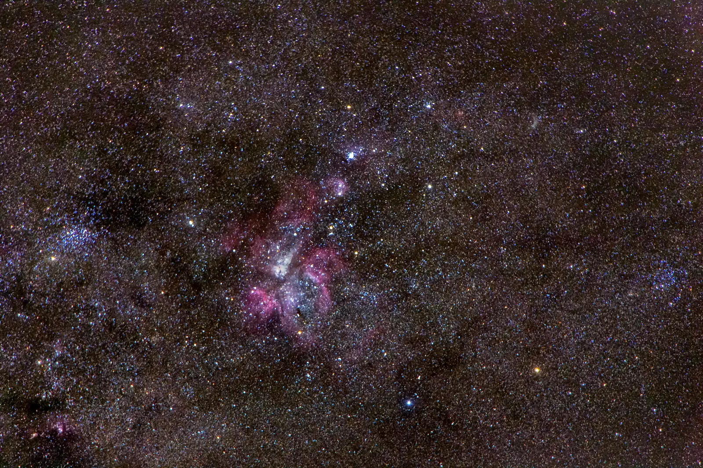
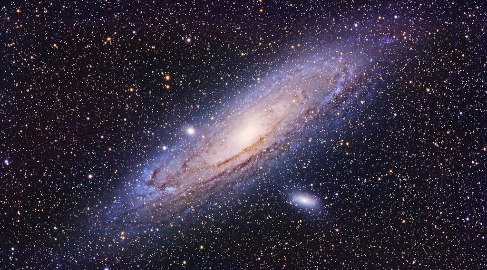

Astro-Physics
206mm f/7.9 EDF
On a 1600GTO mount, with a 90mm “Stowaway” finder.

Laurel, Maryland · Since 1980
One of the last remaining showrooms for amateur astronomy. Between Baltimore and Washington, D.C.
Carina Nebula · photo Dylan O'Donnell, CC0
Astro-Physics 130mm f/6.3 StarFire EDF
An oil-spaced triplet apochromat that comes apart into three sections — compact enough to be carried onto most commercial aircraft.
Illustration, drawn to scale from published specifications
In the showroom
Just part of what awaits those making the pilgrimage to Laurel. Look through the instruments and talk to the people who test them.
Astro-Physics
On a 1600GTO mount, with a 90mm “Stowaway” finder.
TEC
Atop a 900GTO mount with a Particle Wave Monolith tripod.
Astro-Physics
On an 1100GTO mount with a Particle Wave Pinnacle tripod.
Nikon
A rare lens — one of approximately 23 made.
TeleVue
The brass telescope, on a Gibraltar wood and brass field tripod.
Astro-Physics
The first production lens, kept on display.

Credentials
A resource for the international amateur and professional astronomy community, and a registered U.S. government contractor.
Background: Andromeda Galaxy · photo kees scherer, CC0
Services
In-house quality control on what we sell, and the workshop to look after it for years.
Repair
Repair and refurbishment services, including binoculars.
Testing
Testing and certification services for lenses and telescopes.
Appraisals
Appraisals of telescopes and related optical equipment.
Observatories
Residential or professional observatory facilities.
Pre-owned
Used and consigned instruments, available to see in the showroom.
Learning
Comprehensive programs of instruction.
Also in Laurel
Part of the showroom, between Baltimore and Washington, D.C.
1980
Founded — 8 January
46
Years in business
~42
Years in Laurel, Maryland
Visit
Eastern Time. Orders by telephone, in person, or by email.